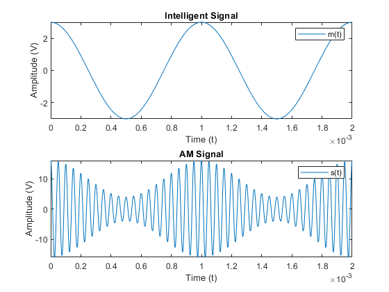
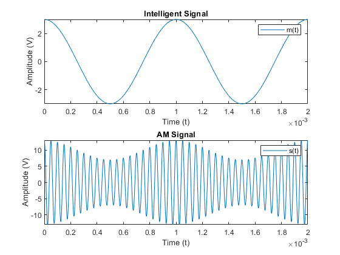
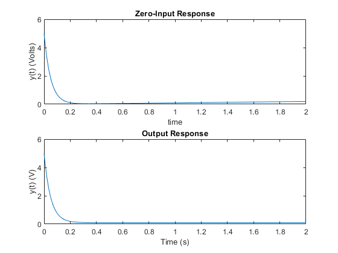
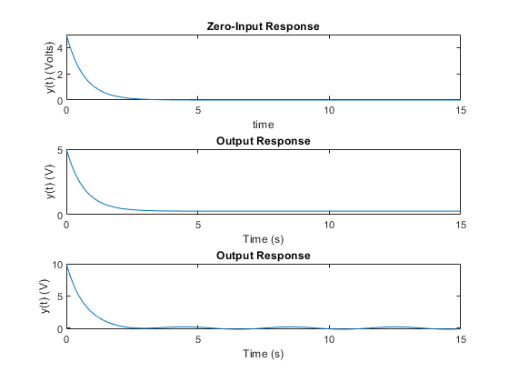
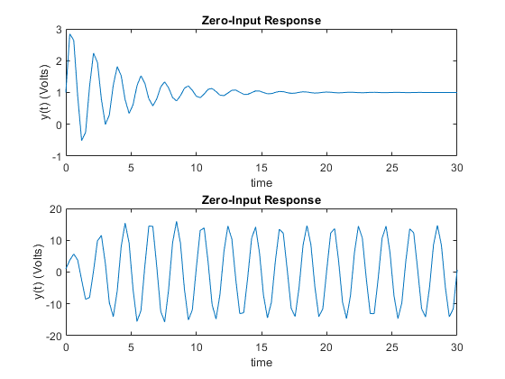
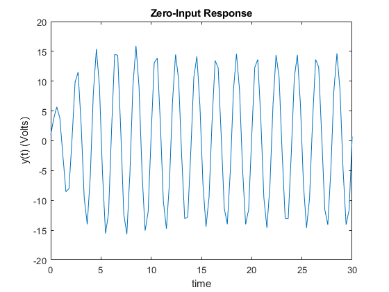

Contents
part A
syms m(t)
syms c(t)
syms s(t)
syms m_1(t)
m(t) = 3*cos(2*pi*1000*t);
c(t) = 10*cos(2*pi*20000*t);
m_1(t) = (0.2*m(t)) + 1;
s(t) = m_1(t) * c(t);
figure(1)
subplot(2,1,1)
fplot(m,[0 0.002]);
legend('m(t)');
title('Intelligent Signal');
xlabel('Time (t)');
ylabel('Amplitude (V)');
subplot(2,1,2)
fplot(s, [0 0.002]);
legend('s(t)');
title('AM Signal');
xlabel('Time (t)');
ylabel('Amplitude (V)');

part B
m_1(t) = (0.1*m(t)) + 1;
s(t) = m_1(t) * c(t);
figure(2)
subplot(2,1,1)
fplot(m,[0 0.002]);
legend('m(t)');
title('Intelligent Signal');
xlabel('Time (t)');
ylabel('Amplitude (V)');
subplot(2,1,2)
fplot(s, [0 0.002]);
legend('s(t)');
title('AM Signal');
xlabel('Time (t)');
ylabel('Amplitude (V)');

part C
The system is time invariant cause the shifting in the input has the
effect with shifting the output.
Part D
syms x_1(t)
syms x_2(t)
syms c_1(t)
syms c_2(t)
x_1(t) = 3*cos(2*pi*3000*t);
x_2(t) = 5*cos(2*pi*2000*t);
c_1(t) = 5*cos(2*pi*20000*t);
c_2(t) = 10*sin(2*pi*20000*t);
x_1(t) = 0.2*x_1(t) + 1;
x_2(t) = 0.3*x_2(t) + 1;
s(t) = (x_1(t)*c_1(t)) + (x_2(t)*c_2(t));
st = 2.5 / 1000;
figure(3)
fplot(s, [0 0.0025]);
legend('s(t)');
title('Quadriture Amplitude Modulation (QAM)');
xlabel('Time (t)');
ylabel('Amplitude (V)');

Part 2
tspan = [0 2];
y0 = 5;
[t,y] = ode23(@DE1, tspan, y0);
figure(4)
subplot(2,1,1)
plot(t,y)
title('Zero-Input Response');
xlabel('time');
ylabel('y(t) (Volts)');
[t,y] = ode23(@DE2, tspan, y0);
subplot(2,1,2)
plot(t,y)
title('Output Response');
xlabel('Time (s)');
ylabel('y(t) (V)');

Part 3
tspan = linspace(0,15);
y0 = 5;
[t,y] = ode23(@DE3, tspan, y0);
figure(5)
subplot(3,1,1)
plot(t,y)
title('Zero-Input Response');
xlabel('time');
ylabel('y(t) (Volts)');
[t,y] = ode23(@DE4, tspan, y0);
subplot(3,1,2)
plot(t,y)
title('Output Response');
xlabel('Time (s)');
ylabel('y(t) (V)');
y0 = 10;
[t,y] = ode23(@DE5, tspan, y0);
subplot(3,1,3)
plot(t,y)
title('Output Response');
xlabel('Time (s)');
ylabel('y(t) (V)');

Part 4
tspan = linspace(0,30);
y0 = [1,8];
[t,y] = ode23(@DE6, tspan, y0);
figure(6)
subplot(2,1,1)
plot(t,y(:,1))
title('Zero-Input Response');
xlabel('time');
ylabel('y(t) (Volts)');
[t,y] = ode23(@DE7, tspan, y0);
subplot(2,1,2)
plot(t,y(:,1))
title('Zero-Input Response');
xlabel('time');
ylabel('y(t) (Volts)');

Part 5
tspan = linspace(0,30);
[t,y] = ode23(@DE8, tspan, y0);
figure(7)
plot(t,y(:,1))
title('Zero-Input Response');
xlabel('time');
ylabel('y(t) (Volts)');
